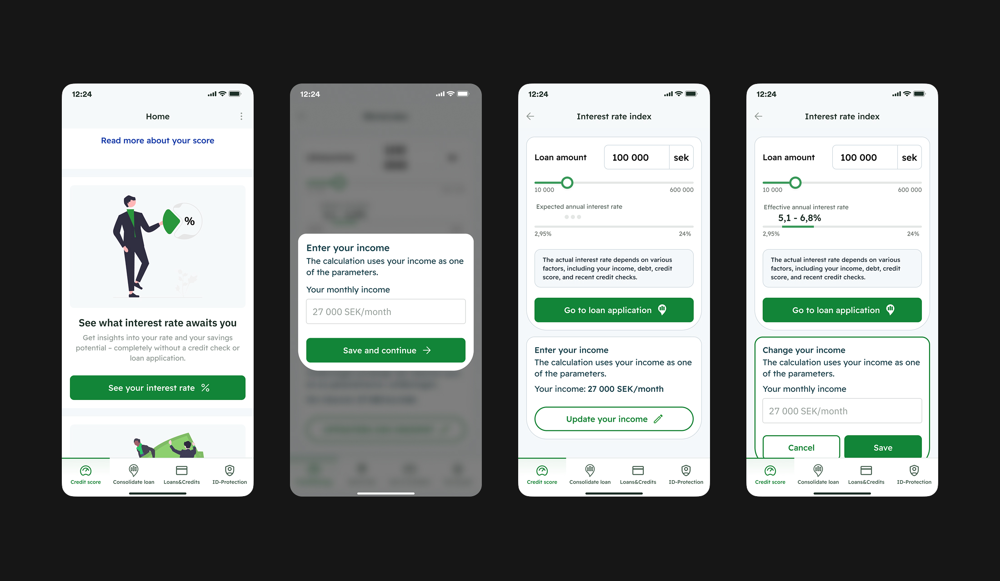
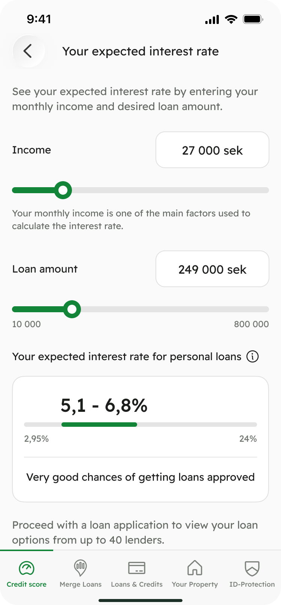
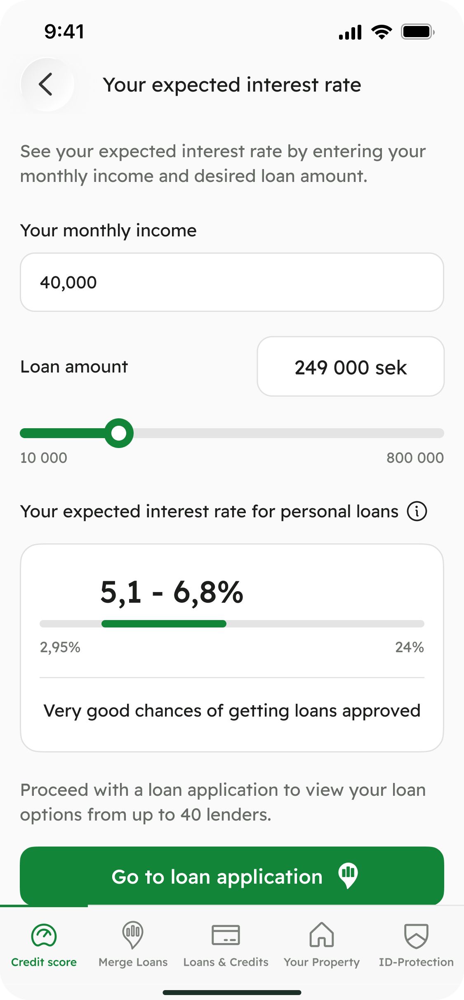

Kreddy · Interest Rate Monitoring
Reduced abandonment from 80% to 20% and increased feature adoption by 300%
Redesigned the Interest Rate Monitoring feature to surface value before commitment — while maintaining stable application conversion.
Interest Rate Monitoring helps users estimate their loan rate based on factors like income and loan amount — giving early clarity before applying.
Product context
Kreddy is a B2C personal finance app that helps users understand their credit score, loans, and overall financial health — and explore loan options without upfront commitment.
Problem
~40% of users dropped off at the income input step when opening the Interest Rate Monitoring feature. Income was requested through a full-screen blocking modal before users could see any prediction — creating early friction and increasing perceived commitment.
Previous experience

User intent
Help users quickly understand their potential interest rate and likelihood of approval before deciding whether applying for a loan makes sense.
Business goal
- Increase adoption of the IRM feature without negatively impacting loan applications
- Reduce early drop-off caused by premature commitment in the flow
- Maintain stable application rates while improving clarity and exploration
Discovery & hypothesis framing
Given the strong analytical signal and the sensitivity of the flow, we reframed the redesign through hypothesis-driven exploration. Together with the Product Owner and ML team, we explored how predictions and inputs could reduce early friction while preserving trust and conversion. Benchmarking similar finance products confirmed the need for a more exploratory, less transactional experience — leading to a focused set of hypotheses.
1. Early commitment before value
Users drop off at the income input step because they are asked to provide personal data before seeing any meaningful value.
2. Lack of early transparency for low-quality users
Users with low approval likelihood continue exploring without understanding their chances, due to a lack of early signals about approval factors.
Alternatives & trade-offs
We embedded the income input directly into the main IRM screen alongside loan amount and prediction, replacing the blocking modal to reduce friction and improve clarity.
Design rationale
- Removes early friction and upfront commitment
- Makes the purpose of income input immediately clear
- Supports exploration and iterative adjustments
Trade-offs
- Increased screen complexity
- Required careful management of prediction states and user expectations
Income as slider
Framed income as an estimate rather than a precise value, conflicting with user expectations.
Rejected
Income as text input
Matched how users think about income as a concrete number, reinforcing clarity and trust.
Selected